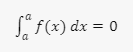
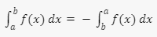
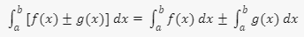
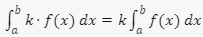
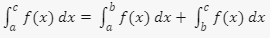

¿Qué es una integral definida?
Las integrales definidas son integrales que sirven para calcular el área de la región comprendida entre la función y el eje
de abscisas en un intervalo determinado.
La integral definida de la función f(x) en el intervalo [a,b] es igual al área entre la gráfica de f(x), el eje X y las rectas verticales x=a y x=b.
Así pues, las integrales definidas se representan de la siguiente manera:
Propiedades
es el signo de integración.
es el límite inferior de la integración.
 es el límite superior de la integración.
es el límite superior de la integración.
es la función a integrar.
es el diferencial de x, que indica la variable de la función que se integra.
Límites de integración iguales: Si los límites de integración son iguales,
la integral definida es cero:

Cambio de límites de integración: Si se invierten los límites de integración,
el signo de la integral cambia:

Suma/Diferencia de funciones: La integral de la suma
o diferencia de dos funciones es igual a la suma o diferencia
de sus integrales:

Multiplicación por una constante: La integral de una
función multiplicada por una constante es igual a la constante
multiplicada por la integral de la función:

Adición de intervalos: La integral en un intervalo
dividido en dos partes es igual a la suma
de las integrales en cada parte:

Referencias
Clases de Matemáticas Online. (2021, November 18). Propiedades de la integral definida. Ejercicios resueltos paso a paso.
Clases De Matemáticas Online. https://ekuatio.com/propiedades-de-la-integral-definida-ejercicios-resueltos-paso-a-paso/#Propiedades_de_la_integral_definida
Repaso sobre las propiedades de las integrales definidas (artículo) | Khan Academy. (n.d.).
https://es.khanacademy.org/math/ap-calculus-ab/ab-integration-new/ab-6-6/a/definite-integrals-properties-review
Funciones. (2023, October 19). Integrales definidas. Funciones Matemáticas. https://www.funciones.xyz/integrales-definidas/